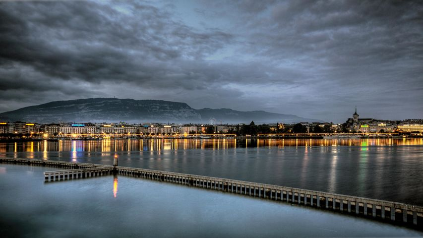
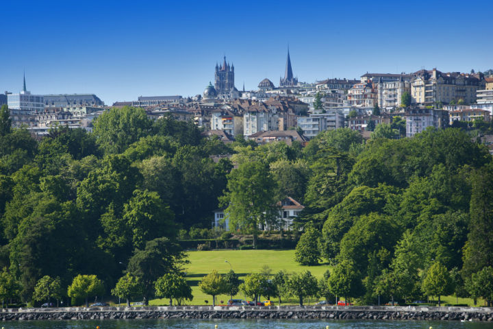
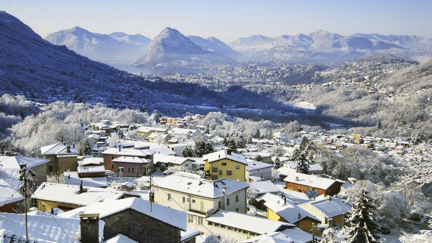

CITIES

BERN
BERN
Wandering through the picture-postcard, Unesco World Heritage–listed Old Town, with its provincial, laid-back air, it's hard to believe that Bern (Berne in French) is the capital of Switzerland.

GENEVA
GENEVA
Like the swans that frolic on its eponymous Alpine lake (Europe's largest), Geneva (Genève) is a rare bird. Constantly perceived as the Swiss capital (it isn't), Switzerland's second-largest city is slick and cosmopolitan, and its people chatter in almost every language among streets paved by gold.

LAUSANNE
LAUSANNE
Surrounded by vineyards, rolling down a trio of hillsides to the lakeshore, Switzerland’s fourth-largest city, Lausanne, likes to think it gives Geneva a run for its money.

LUGANO
LUGANO
Ticino’s lush, mountain-rimmed lake isn’t its only liquid asset. The largest city in the canton is also the country’s third-most-important banking centre. Suits aside, Lugano is a vivacious city, with posh designer boutiques, bars and pavement cafes.